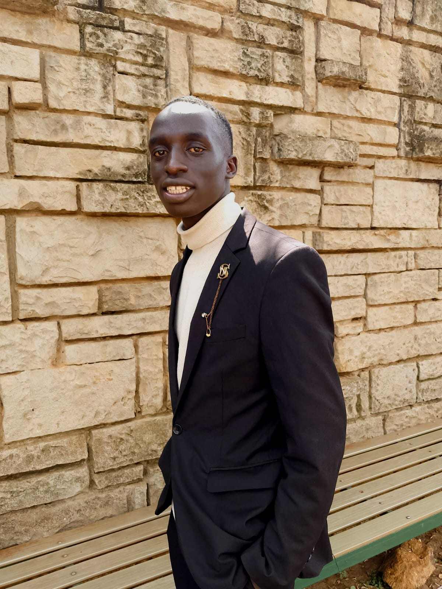

Nous vous proposons des voyages inoubliables à travers l'Afrique, avec des destinations exotiques et des expériences uniques.
I am Bravin Omondi Nyahanga, Co-founder Charming Afrika, and the host Afrique Charmante. Studied International Relations at The University of Nairobi and French language at Alliance Francaise - Nairobi. Current vice-Chair CEFRUNA UON French club.
Afrique Charmante est une initiative francophone sous Charming Afrika qui crée une plateforme pour les jeunes Africains afin de se connecter, discuter et réimaginer l'avenir du continent. Elle met l'accent sur le leadership africain, l'autonomisation des jeunes et le développement durable, en utilisant la langue française comme pont pour engager l'Afrique francophone. À travers des tables rondes, des dialogues et des échanges culturels, Afrique Charmante permet aux jeunes de partager des idées, de remettre en question des perspectives et de créer des réseaux qui contribuent à une Afrique meilleure et plus unie. Objectif : Offrir un espace où les jeunes peuvent explorer le leadership responsable, l'identité africaine et l'avenir de l'Afrique en français, favorisant la compréhension interculturelle et la collaboration entre l'Afrique francophone et anglophone.
Email : charmingafrika@gmail.com
Téléphone : +254 712345678
Pour nous contacter, vous pouvez envoyer votre message ici :